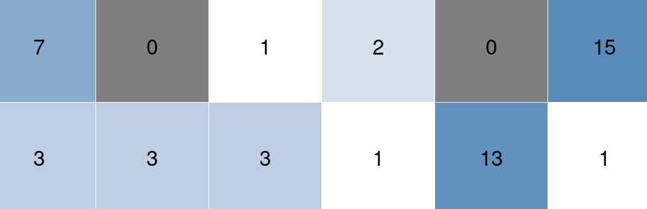
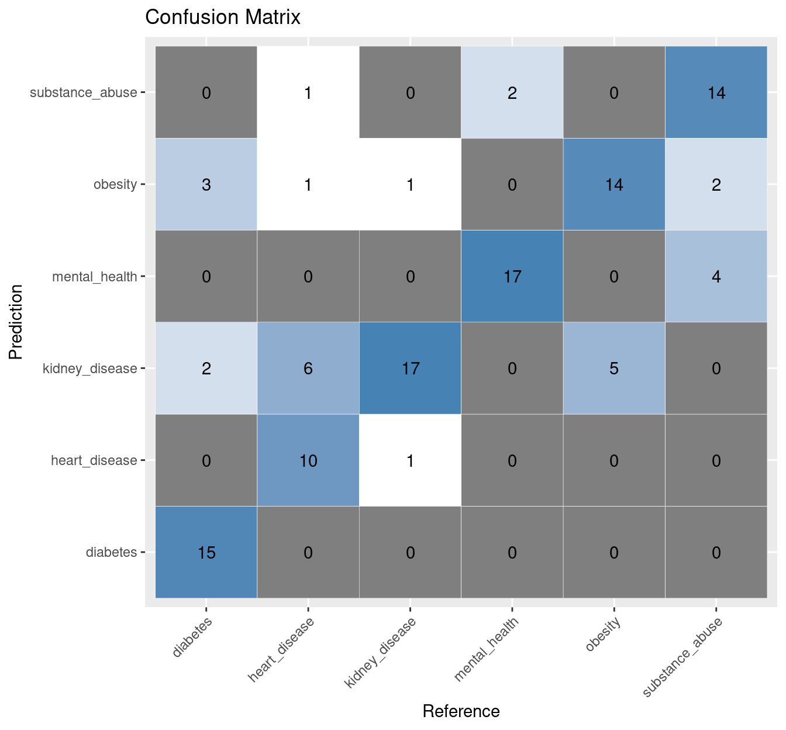

library(tidyverse)
terms <- c('heart disease',
'diabetes',
'mental health',
'substance abuse',
'obesity',
'kidney disease')
rss <- lapply(terms, function(x) {
quicknews::qnews_build_rss(x) %>%
quicknews::qnews_strip_rss() })
names(rss) <- terms
rss0 <- rss %>%
bind_rows(.id = 'term') %>%
mutate(term = gsub(' ', '_', term)) %>%
distinct(link, .keep_all = TRUE) %>%
mutate(doc_id = as.character(row_number())) %>%
mutate(term = as.factor(term)) %>%
select(doc_id, term:link)
A re-worked version of a previous post. A very small survey of some simple, but effective approaches to text classification using R, with a focus on Naive Bayes and FastText classifiers.
1 Labeled data
For demonstration purposes, we build a corpus using the quicknews package. The corpus is comprised of articles returned from a set of health-related queries. Search terms, then, serve as classification labels. An imperfect annotation process, but fine for our purposes here. As “distant” supervision.
articles <- quicknews::qnews_extract_article(url = rss0$link, cores = 7)
articles0 <- articles %>% left_join(rss0)Descriptives for the resulting corpus by search term. So, a super small demo corpus.
articles0 %>%
mutate(words = tokenizers::count_words(text)) %>%
group_by(term) %>%
summarize(n = n(), words = sum(words)) %>%
janitor::adorn_totals() %>%
knitr::kable()| term | n | words |
|---|---|---|
| diabetes | 81 | 72045 |
| heart_disease | 82 | 65505 |
| kidney_disease | 80 | 68379 |
| mental_health | 82 | 73804 |
| obesity | 81 | 69179 |
| substance_abuse | 84 | 64133 |
| Total | 490 | 413045 |
A sample of articles from the GoogleNews/quicknews query:
set.seed(99)
articles0 %>%
select(term, date, source, title) %>%
sample_n(5) %>%
knitr::kable()| term | date | source | title |
|---|---|---|---|
| kidney_disease | 2022-05-23 | Reuters.com | U.S. Task Force to consider routine kidney disease screening as new drugs available |
| substance_abuse | 2022-06-15 | The Sylva Herald | District Court | Court News | thesylvaherald.com |
| substance_abuse | 2022-05-28 | WUSF News | Northeast Florida’s health care concerns: from substance abuse to food deserts |
| heart_disease | 2022-05-23 | Bloomberg | Take Breaks and Watch Less TV to Slash Heart Disease Risk, Experts Say |
| substance_abuse | 2022-06-14 | Williston Daily Herald | Report: U.S. records highest ever rates of substance abuse, suicide-related deaths |
2 Data structures
2.1 Document-Term Matrix
As bag-of-words
dtm <- articles0 %>%
mutate(wds = tokenizers::count_words(text)) %>%
filter(wds > 200 & wds < 1500) %>%
text2df::tif2token() %>%
text2df::token2df() %>%
mutate(token = tolower(token))
# mutate(stem = quanteda::char_wordstem(token))
dtm %>% head() %>% knitr::kable()| doc_id | token | token_id |
|---|---|---|
| 2 | heart | 1 |
| 2 | disease | 2 |
| 2 | is | 3 |
| 2 | a | 4 |
| 2 | very | 5 |
| 2 | general | 6 |
dtm_tok <- dtm %>%
count(doc_id, token) %>%
group_by(token) %>%
mutate(docf = length(unique(doc_id))) %>% ungroup() %>%
mutate(docf = round(docf/length(unique(doc_id)), 3 )) %>%
filter(docf >= 0.01 & docf < 0.5 &
!grepl('^[0-9]|^[[:punct:]]', token))
dtm_tok %>% head() %>% knitr::kable()| doc_id | token | n | docf |
|---|---|---|---|
| 10 | acknowledge | 1 | 0.031 |
| 10 | across | 1 | 0.207 |
| 10 | additional | 1 | 0.151 |
| 10 | address | 3 | 0.217 |
| 10 | adhere | 1 | 0.018 |
| 10 | ads | 1 | 0.026 |
dtm_sparse <- dtm_tok %>%
tidytext::bind_tf_idf(term = token,
document = doc_id,
n = n) %>%
tidytext::cast_sparse(row = doc_id,
column = token,
value = tf_idf)2.2 Cleaned text
ctext <- dtm %>%
group_by(doc_id) %>%
summarize(text = paste0(token, collapse = ' ')) %>% ungroup()
strwrap(ctext$text[5], width = 60)[1:5][1] "upon receiving a diagnosis of type 1 diabetes ( t1d ) ,"
[2] "many people have the same reaction : “ but why me ? ” some"
[3] "people have t1d that runs in their family , while others"
[4] "have no idea how or why they received a diagnosis . often ,"
[5] "to their frustration , those questions go unanswered . but" 2.3 Word embeddings
## devtools::install_github("pommedeterresautee/fastrtext")
tmp_file_txt <- tempfile()
tmp_file_model <- tempfile()
writeLines(text = ctext$text, con = tmp_file_txt)
dims <- 25
window <- 5
fastrtext::execute(commands = c("skipgram",
"-input", tmp_file_txt,
"-output", tmp_file_model,
"-dim", gsub('^.*\\.', '', dims),
"-ws", window,
"-verbose", 1))
Read 0M words
Number of words: 5318
Number of labels: 0
Progress: 100.0% words/sec/thread: 21912 lr: 0.000000 avg.loss: 2.412294 ETA: 0h 0m 0sfast.model <- fastrtext::load_model(tmp_file_model)add .bin extension to the pathfast.dict <- fastrtext::get_dictionary(fast.model)
embeddings <- fastrtext::get_word_vectors(fast.model, fast.dict)3 Classifiers
articles1 <- articles0 %>%
arrange(doc_id) %>%
filter(doc_id %in% unique(dtm_tok$doc_id))set.seed(99)
trainIndex <- caret::createDataPartition(articles1$term, p = .7)$Resample13.1 Bag-of-words & Naive Bayes
Document represented as bag-of-words.
dtm_train <- dtm_sparse[trainIndex, ]
dtm_test <- dtm_sparse[-trainIndex, ]
dtm_classifier <- e1071::naiveBayes(as.matrix(dtm_train),
articles1[trainIndex, ]$term,
laplace = 0.5)
dtm_predicted <- predict(dtm_classifier, as.matrix(dtm_test))3.2 Word embeddings & Naive Bayes
Document represented as an aggregate (here, mean) of constituent word embeddings. Custom/FastText word embeddings derived from
quicknewscorpus (above).
v1 <- embeddings %>%
data.frame() %>%
mutate(token = rownames(embeddings)) %>%
filter(token %in% unique(dtm_tok$token)) %>%
inner_join(dtm)
avg0 <- lapply(unique(dtm$doc_id), function(y){
d0 <- subset(v1, doc_id == y)
d1 <- as.matrix(d0[, 1:dims])
d2 <-Matrix.utils::aggregate.Matrix(d1,
groupings = rep(y, nrow(d0)),
fun = 'mean')
as.matrix(d2)
})
doc_embeddings <- do.call(rbind, avg0)emb_train <- doc_embeddings[trainIndex, ]
emb_test <- doc_embeddings[-trainIndex, ]
emb_classifier <- e1071::naiveBayes(as.matrix(emb_train),
articles1[trainIndex, ]$term,
laplace = 0.5)
emb_predicted <- predict(emb_classifier, as.matrix(emb_test))3.3 FastText classifier
fast_train <- articles1[trainIndex, ]
fast_test <- articles1[-trainIndex, ]Prepare data for FastText:
tmp_file_model <- tempfile()
train_labels <- paste0("__label__", fast_train$term)
train_texts <- tolower(fast_train$text)
train_to_write <- paste(train_labels, train_texts)
train_tmp_file_txt <- tempfile()
writeLines(text = train_to_write, con = train_tmp_file_txt)
test_labels <- paste0("__label__", fast_test$term)
test_texts <- tolower(fast_test$text)
test_to_write <- paste(test_labels, test_texts)fastrtext::execute(commands = c("supervised",
"-input", train_tmp_file_txt,
"-output", tmp_file_model,
"-dim", 25,
"-lr", 1,
"-epoch", 20,
"-wordNgrams", 2,
"-verbose", 1))
model <- fastrtext::load_model(tmp_file_model)
fast_predicted0 <- predict(model, sentences = test_to_write)
fast_predicted <- as.factor(names(unlist(fast_predicted0)))4 Evaluation
predictions <- list('BOW' = dtm_predicted,
'Word embeddings' = emb_predicted,
'FastText' = fast_predicted)4.1 Model accuracy
conf_mats <- lapply(predictions,
caret::confusionMatrix,
reference = articles1[-trainIndex, ]$term)
sums <- lapply(conf_mats, '[[', 3)
sums0 <- as.data.frame(do.call(rbind, sums)) %>%
select(1:4) %>%
mutate_at(1:4, round, 3)
sums0 %>% arrange(desc(Accuracy)) %>% knitr::kable()| Accuracy | Kappa | AccuracyLower | AccuracyUpper | |
|---|---|---|---|---|
| FastText | 0.757 | 0.708 | 0.668 | 0.832 |
| BOW | 0.661 | 0.593 | 0.567 | 0.747 |
| Word embeddings | 0.435 | 0.320 | 0.343 | 0.530 |
4.2 FastText classifier: Model accuracy by class
conf_mats[['FastText']]$byClass %>% data.frame() %>%
select (Sensitivity, Specificity, Balanced.Accuracy) %>%
rownames_to_column(var = 'topic') %>%
mutate(topic = gsub('Class: ','', topic)) %>%
mutate_if(is.numeric, round, 2) %>%
knitr::kable() | topic | Sensitivity | Specificity | Balanced.Accuracy |
|---|---|---|---|
| diabetes | 0.75 | 1.00 | 0.88 |
| heart_disease | 0.56 | 0.99 | 0.77 |
| kidney_disease | 0.89 | 0.86 | 0.88 |
| mental_health | 0.89 | 0.96 | 0.93 |
| obesity | 0.74 | 0.93 | 0.83 |
| substance_abuse | 0.70 | 0.97 | 0.83 |
4.3 FastText classifier: Confusion matrix
dp <- as.data.frame(conf_mats[['FastText']]$table)
ggplot(data = dp,
aes(x = Reference, y = Prediction)) +
geom_tile(aes(fill = log(Freq)),
colour = "white") +
scale_fill_gradient(low = "white",
high = "steelblue") +
geom_text(data = dp,
aes(x = Reference,
y = Prediction,
label = Freq)) +
theme(legend.position = "none",
axis.text.x=element_text(angle=45,
hjust=1)) +
labs(title="Confusion Matrix")